Manual
CTL-1 turns the M-VAVE FM-1 into a MIDI controller. The keys play notes, in any scale with its chords under the black keys; the knobs send controllers in four banks; an arpeggiator and a four-track Euclidean drum sequencer run on its clock. Everything goes out over USB and Bluetooth, MIDI from the TRS jack is passed along, and the FM-1 plays it all on its own General MIDI sounds too, so it works with nothing connected. If you like, the keys can also sense how hard you play them, for velocity and aftertouch.
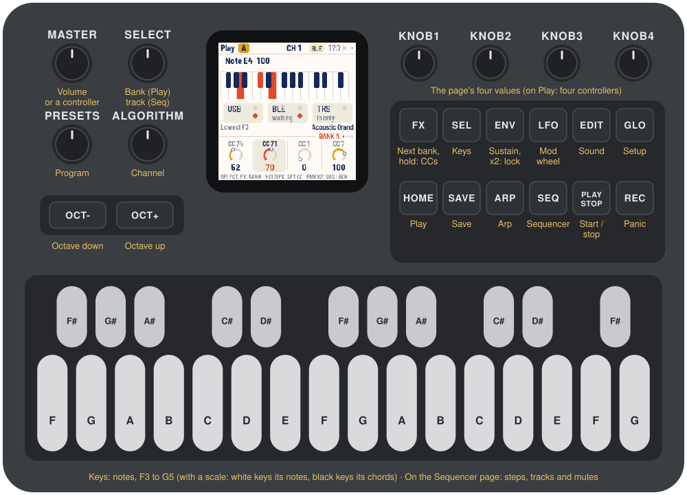
1Install
Try it first: the CTL-1 emulator runs the same code in the browser, with sound, played with the mouse, a touch screen or the computer keyboard. In Chrome or Edge it can send to your MIDI ports, too.
Install: open the web installer in Chrome or Edge, connect the FM-1 with a USB data cable and press Install. Don't unplug it while it's writing; when it finishes, the FM-1 restarts into CTL-1.
Go back: "Back to the stock firmware", at the bottom of the same page, puts M-VAVE's firmware back (download the FM-1 V15 file from the link there, choose it, press the button). M-VAVE's own updater, M-UPGRADE, works too.
Installing other firmware is at your own risk. If the FM-1 ever won't start, see Recovering an FM-1 that won't start.
Install from the command line
Download the firmware file (ctl-VERSION.fwsc) from the releases page, get the CTL-1 source from GitHub, install Python 3 with pip3 install mido python-rtmidi, and run:
python3 base/tools/fm1_install.py ctl-VERSION.fwsc2Getting started
- Connect. Plug the FM-1 into a computer with a USB data cable. It shows up as a MIDI device named "CTL-1 FM-1" (a Mac that knew the FM-1 with other firmware may keep the old name until you remove it in Audio MIDI Setup).
- Play. The keys play notes from F3, and the FM-1 plays them too, on a piano. OCT− and OCT+ move the keys an octave.
- Turn KNOB 1–4. On the Play page they send four controllers: cutoff, resonance, modulation and volume. Press FX for the next of four banks.
- Pick a sound. Turn PRESETS: a program change goes out, and the FM-1's own sound follows it. ALGORITHM sets the MIDI channel.
- Choose a scale. Press SEL, then turn KNOB 2. Now the white keys play the scale and the black keys its chords.
- Arpeggiate. Press ARP and turn KNOB 1 to On; hold a chord.
- Add drums. Press SEQ and PLAY: four Euclidean drum tracks on channel 10. KNOB 1–4 shape the selected track.
CTL-1 saves your settings by itself a few seconds after a change.
3Controls
The drawing at the top shows them all; here they are in more detail.
| Control | What it does |
|---|---|
| Keys | Notes, chromatic from F3; or, with a scale, its notes on the white keys and its chords on the black keys. On the Sequencer page they edit the steps instead |
| OCT− / OCT+ | The keys an octave down or up, from −3 to +3 |
| KNOB 1–4 | The four values at the bottom of the screen; on the Play page, four controllers |
| SELECT | The current page's own pages: the knob banks on Play, the tracks on the Sequencer, Touch on Setup |
| ALGORITHM | MIDI channel, 1 to 16 |
| PRESETS | Program change, 1 to 128; the FM-1's own sound follows it |
| MASTER | The volume of the FM-1's sound, or a controller (Sound page) |
| HOME | Play page |
| SEL | Keys page: root, scale, velocity, humanize |
| ARP | Arp page |
| SEQ | Sequencer page |
| EDIT | Sound page |
| GLO | Setup page: tempo, clock, sequencer channel, glow; and Touch: velocity and aftertouch from the keys |
| FX | The next knob bank, A to D. Held: KNOB 1–4 set the bank's controller numbers |
| ENV | Sustain while held. Tap it twice to lock sustain on; press it again to unlock |
| LFO | Mod wheel: rises while held, falls when let go |
| PLAY | Start or stop the sequencer, and send MIDI start or stop |
| REC | Panic: all notes off |
| SAVE | Save now |
Each page has its own button, and that button lights while you're on the page.
4The screen
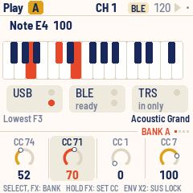
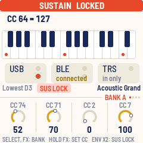
- Top bar: the page's name (on Play, the knob bank's letter in a chip), the MIDI channel in the middle, and the tempo with a play triangle on the right. The triangle is dark while playing and flashes on each beat; "EXT" replaces the tempo when the clock comes from outside. A dot at the far right means there are unsaved changes. Messages, such as "KNOB BANK B" or "SAVED", fill the bar for about a second.
- The page: what it's about (each page below).
- Status line: the lowest key's note; "ARP" or "LATCH" while the arpeggiator is on, "SUSTAIN" (or "SUS LOCK") and "MOD"; and on the right the program, by name.
- Knob row: on its rule, a tag says what the knobs edit ("BANK A", "KEYS", "TRACK 2"…), with dots for the four banks on Play, the four tracks on the Sequencer and Setup's two pages. Under it, KNOB 1–4: each one's name, a dial (a row of pips for a setting with a few positions) and its value. The one you turned last stands out for a moment.
- Footer: what the page's buttons and keys do.
The lights: the current page's button is bright, as are LFO while the mod wheel is up, ENV while sustain is on, and OCT− or OCT+ while the octave is shifted. PLAY flashes green on each beat while playing. The keys light while you hold them and when a note arrives over MIDI. Every other button glows dimly so its label can be read in the dark (Setup, Glow); with a scale, so do the root keys.
5Playing
The 27 keys play notes from F3 to G5 at octave 0. OCT− and OCT+ move them an octave at a time; the status line says which note is the lowest key. A note already held ends correctly even if you change the octave before letting go.
- Velocity is fixed at first: every note plays at the Keys page's Velocity (KNOB 3), 100 to start with. With Touch on, the keys sense how hard you play them instead, and can send aftertouch. For details, see Touch.
- Sustain: hold ENV. It sends controller 64 on, and off when you let go. Tap ENV twice quickly to lock sustain on ("SUS LOCK"); press ENV again to unlock, and sustain ends when you let go. REC unlocks it too.
- Mod wheel: hold LFO. Controller 1 rises from 0 to 127 over a sixteenth note, and falls back just as fast when you let go. On the FM-1's sounds it adds vibrato.
- Channel: turn ALGORITHM. Held notes end first, on the channel they started on.
- Program change: turn PRESETS. Each step sends a program change, and the FM-1's sound follows.
- Panic: press REC. It ends every held note and sends sustain off and "all notes off" on the keyboard's channel and the sequencer's.
The Play page shows the last message you sent, the keys, and the three ports, each with a light for MIDI coming in and, for USB and Bluetooth, one for MIDI going out. Under BLE: "connected" while a computer, a tablet or a Bluetooth MIDI device is connected, "ready" while none is.
6Knobs and banks
On the Play page, KNOB 1–4 send controllers: four banks of four, 16 in all. Press FX, or turn SELECT, for banks A, B, C and D. Each knob remembers its value in each bank, so it picks up where you left it.
| Bank | KNOB 1 | KNOB 2 | KNOB 3 | KNOB 4 |
|---|---|---|---|---|
| A | 74 cutoff | 71 resonance | 1 modulation | 7 volume |
| B | 73 attack | 72 release | 75 decay | 76 vibrato |
| C | 16 | 17 | 18 | 19 |
| D | 20 | 21 | 22 | 23 |
Your own numbers: hold FX and turn KNOB 1–4. While FX is held they set the current bank's four controller numbers (0 to 119), and letting go doesn't change the bank. Tap FX to reach another bank first.
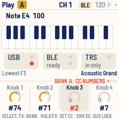
Turning a knob slowly moves one step a click; turning it quickly moves up to six.
7Scales and chords
Press SEL for the Keys page.
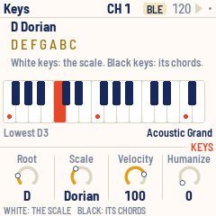
| Knob | Sets |
|---|---|
| KNOB 1 Root | C to B |
| KNOB 2 Scale | Chromatic, Major, Minor, Dorian, Mixolydian, Harmonic minor, Pentatonic, Pentatonic minor, Blues |
| KNOB 3 Velocity | 1 to 127 |
| KNOB 4 Humanize | 0 to 40: a random spread of velocity for the arpeggiator and sequencer |
Chromatic is the default: the keys work like a normal keyboard. With any other scale:
- White keys play the scale's notes in order, from the root in octave 3. Every white key sounds right. The keys that play the root glow, so you can see where each octave starts.
- Black keys play chords: the triad on each step of the scale. In C major that's C, Dm, Em, F, G, Am, B°, then C an octave up.
Changing the root or scale ends any held notes.
8Sound
CTL-1 has the 128 General MIDI sounds and the drum kit (on channel 10), from Sonivox EAS. They play whatever CTL-1 plays (the keys, the arpeggiator, the sequencer) through the FM-1's speaker and headphone jack. PRESETS picks the sound on the keyboard's channel.
Press EDIT for the Sound page. It shows the sound playing, how many voices sound and how busy the processor is.
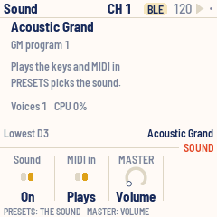
| Knob | Sets |
|---|---|
| KNOB 1 Sound | On or Off |
| KNOB 2 MIDI in | Plays or Ignored: whether MIDI coming in plays the sounds too |
| KNOB 3 MASTER | Volume, or a controller number for the MASTER knob to send |
MASTER has a fixed range, unlike KNOB 1–4, which turn endlessly. Set to Volume (the default), it's the volume of the FM-1's sounds. Given a controller number, it sends 0 to 127 across its travel, only when it moves, and the sounds play at full volume.
Up to 24 notes sound at once.
9Arpeggiator
Press ARP for the Arp page; KNOB 1 there turns the arpeggiator on. While it's on the keys don't sound directly: hold notes or a chord and it plays them one at a time, in tempo. With a scale, one black key is a whole chord to arpeggiate.
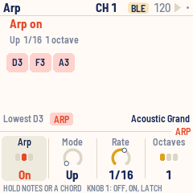
| Knob | Sets |
|---|---|
| KNOB 1 Arp | Off, On or Latch |
| KNOB 2 Mode | Up, Down, Up-down, Random, As played |
| KNOB 3 Rate | 1/4, 1/8, 1/8 triplet, 1/16, 1/16 triplet, 1/32 |
| KNOB 4 Octaves | 1 to 3: the notes repeated in higher octaves |
- On: it plays while you hold keys and stops when you let go.
- Latch: it keeps playing after you let go. The next chord, after letting go of everything, replaces the old one.
Each note lasts half a step. The arpeggiator follows the clock whether or not the sequencer is playing, on the same grid, so the two stay in time: a chord played between steps starts on the next one.
10Sequencer
Press SEQ for the Sequencer page: four drum tracks of sixteenth notes on the sequencer's channel, 10 by default. Each row on screen is one track.
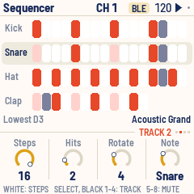
| Track | Note | Steps | Hits |
|---|---|---|---|
| 1 | 36 Kick | 16 | 4 |
| 2 | 38 Snare | 16 | 2, turned 4 steps |
| 3 | 42 Hat | 16 | 8 |
| 4 | 39 Clap | 12 | 3, turned 2 steps |
KNOB 1–4 set the selected track:
| Knob | Sets |
|---|---|
| KNOB 1 Steps | 1 to 16: the track's length |
| KNOB 2 Hits | How many steps play |
| KNOB 3 Rotate | Turns the pattern, step by step |
| KNOB 4 Note | The note it plays; on channel 10 the screen shows the drum's name |
The hits are spread as evenly as possible over the steps (a Euclidean rhythm). Tracks of different lengths drift against each other, which makes longer, shifting patterns.
By hand: on this page the keys edit instead of playing.
- White keys turn the selected track's 16 steps on or off.
- Black keys 1–4 select a track (so does SELECT).
- Black keys 5–8 mute or unmute tracks 1–4.
Turning Steps, Hits or Rotate rebuilds the pattern from those numbers, replacing steps set by hand: set the numbers first, then fine-tune with the keys. The lights show the pattern: steps that play bright, empty ones dim, the step playing now flipped.
PLAY starts and stops it, always from step 1. Velocity comes from the Keys page, spread by Humanize.
11Clock and transport
CTL-1 keeps a clock at 24 ticks a beat; the arpeggiator and sequencer run on it. Set the tempo (40 to 240 BPM) and the clock's source on the Setup page:
| Clock | What happens |
|---|---|
| Int | CTL-1 keeps time and sends MIDI clock over USB. The default |
| Int, quiet | CTL-1 keeps time but sends no clock |
| Ext | CTL-1 follows MIDI clock and start / stop from USB or the TRS jack |
PLAY starts and stops the sequencer. With an internal clock it also sends MIDI start and stop, so a DAW or drum machine following the clock starts with it. With Ext, incoming start and stop drive the sequencer, the Tempo knob rests, and the screen shows "EXT".
12Setup
Press GLO for the Setup page. It also counts the MIDI messages each port has carried in and out (USB, Bluetooth, TRS), a quick way to see that a cable or a connection works. The version is at the top right.
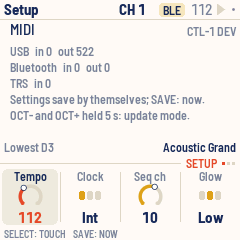
| Knob | Sets |
|---|---|
| KNOB 1 Tempo | 40 to 240 BPM |
| KNOB 2 Clock | Int, Int quiet, Ext |
| KNOB 3 Seq ch | The sequencer's MIDI channel, 1 to 16 |
| KNOB 4 Glow | Off, Low or High: how brightly unlit buttons glow |
Touch
The FM-1's keys have no velocity sensors, but under each key is a carbon pill whose resistance falls as you press harder. CTL-1 can read it, so the keys play with velocity and aftertouch, with no change to the hardware. It's on at first, with aftertouch for each note. On the Setup page, turn SELECT for the Touch page.
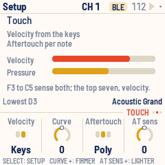
| Knob | Sets |
|---|---|
| KNOB 1 Velocity | Fixed: every note at the Keys page's Velocity. Keys: velocity from how hard you play |
| KNOB 2 Curve | −5 to +5. Higher means you play harder to reach 127; lower, softer playing reaches it |
| KNOB 3 Aftertouch | Off; Poly, pressure for each note; or Channel, one pressure for the channel |
| KNOB 4 AT sens | −5 to +5. Higher means a lighter lean gives full aftertouch |
The page shows the last note's velocity and the pressure now, so you can see what your playing sends.
- Where you press matters as much as how hard. Pressing near the bottom edge of a key plays softer than the middle, on every key: the most reliable way to play quietly.
- The keys sense in two zones. F3 to C5 read how hard the key lands, with the widest range, and sense aftertouch too. The top seven read it another way: their soft end is narrower, firm presses all come out near the top, and they have no aftertouch.
- A note plays about 5 ms after the key goes down, once its velocity is read.
- Aftertouch counts from where the key comes to rest after the note, so a key that's only held sends nothing. Press harder to send more; ease off to send less.
- Poly aftertouch goes to each note of a chord key. While the arpeggiator is on, aftertouch is the channel's.
- The arpeggiator and the sequencer keep the Keys page's Velocity, spread by Humanize.
- On the Sequencer page the keys edit steps as usual, the moment they go down.
- A lit LED changes the reading of the keys beside it, so while you hold a key, the lights in its column go dark each time it's read. They look slightly dimmer.
Bluetooth
Turn SELECT twice on the Setup page for the Bluetooth page. Its top half is for a computer, phone or tablet connecting to the FM-1 (section 13 says how): it says whether one is connected. Its bottom half finds Bluetooth MIDI devices for CTL-1 to connect to itself: a synth, a pedal, a controller.
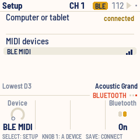
- Put the device in its pairing mode. It appears in the list, with bars for its signal.
- Turn KNOB 1 to pick it, and press SAVE. The top bar says CONNECTING, then CONNECTED.
- Press SAVE again to let it go.
Everything CTL-1 plays goes to the device and to a connected computer alike. KNOB 4 turns Bluetooth off or on; CTL-1 starts with it as you left it.
13MIDI
- USB: a class-compliant MIDI device, "CTL-1 FM-1": everything CTL-1 plays goes out here, and MIDI comes in.
- Bluetooth: Bluetooth MIDI, named "FM-1", on from the moment CTL-1 starts. Everything CTL-1 plays goes out here too, and MIDI comes in. What arrives over USB is passed on to Bluetooth, and what arrives over Bluetooth to USB.
- TRS jack: MIDI in only (the FM-1 has no MIDI out jack). What arrives is passed on to USB and Bluetooth.
- MIDI in (from any of them) lights the keys, drives the clock when it's set to Ext, and plays the FM-1's sounds unless the Sound page says Ignored.
To connect over Bluetooth on a Mac, open Audio MIDI Setup, choose Window > Show MIDI Studio, click the Bluetooth button, then Connect next to FM-1. On an iPad or iPhone, connect from a music app's Bluetooth MIDI settings (in GarageBand: Settings > Advanced > Bluetooth MIDI Devices). The top bar says COMPUTER CONNECTED, the Play page's BLE port says "connected", and the Setup page counts what has passed.
What CTL-1 sends, on the keyboard's channel unless noted:
| Action | Message |
|---|---|
| Key | Note on (velocity from the Keys page, or from the key with Touch on), note off |
| Pressing a held key (Touch) | Poly aftertouch for each of its notes, or channel aftertouch |
| KNOB 1–4 on Play | Control change: the bank's controller |
| MASTER | Control change: the Sound page's controller (when it has one) |
| PRESETS | Program change |
| ENV | Control change 64: 127, then 0 |
| LFO | Control change 1, rising to 127 over a sixteenth, then back to 0 |
| REC | Note offs, control change 64 = 0 and 123 = 0 (also on the sequencer's channel) |
| Arpeggiator | Note on and off |
| Sequencer | Note on and off on the sequencer's channel |
| Clock (Int) | MIDI clock, 24 a beat |
| PLAY (Int, Int quiet) | MIDI start / stop |
CTL-1 passes on channel messages and real-time messages (clock, start, stop), not SysEx.
14Saving
CTL-1 saves by itself about four seconds after a change, once nothing is held and the sequencer is stopped: saving pauses the FM-1 for a moment, so it waits until you stop playing. A dot at the top right means there are unsaved changes. Press SAVE to save at once.
Everything on the pages is saved: the knob banks and their values, scale, sound, arpeggiator, sequencer tracks, channel, program, tempo, octave and Setup.
15Troubleshooting
Update mode: hold OCT− and OCT+ together for five seconds. A countdown appears; let go before it ends to cancel.
Calibration: if a button or knob does the wrong thing, hold OCT− and OCT+ while you switch the FM-1 on. The screen then asks you to press each button and turn each knob in turn.
After a crash: CTL-1 shows a red CRASH screen and restarts by itself a few seconds later. If you report the problem, include the numbers on that screen (a photo is easiest) and what you were doing.
Safe mode: if CTL-1 crashes twice in a row while starting, it starts in SAFE MODE instead. There's no sound, but USB works, so the web installer can reach it: reinstall CTL-1, or put the stock firmware back from the same page. Press PLAY to try starting CTL-1 normally again. If even safe mode fails twice, the FM-1 drops into the chip's own update mode, and only the rescue below can reach it.
If CTL-1 ever crashes while Bluetooth is running, the next start leaves Bluetooth off and says "BLUETOOTH OFF AFTER A CRASH". Everything else works. To start it again, press SAVE on the Bluetooth page (or hold SAVE on the Setup page). It starts by itself again at the next restart.
A Mac won't connect over Bluetooth: if Audio MIDI Setup's Bluetooth window doesn't show FM-1 as connected after you click Connect, quit Audio MIDI Setup (⌘Q), open it again and click Connect once more. Audio MIDI Setup can lose touch with the Mac's MIDI service, and then it links to the FM-1 without starting its MIDI. The Bluetooth page then says "connected", with "No MIDI yet" in red under it. While it lasts, no other computer or tablet can find the FM-1.
The computer shows another name: a Mac that knew the FM-1 with other firmware may keep the old name. Remove the FM-1 in Audio MIDI Setup (Window > Show MIDI Studio) and plug it in again.
Recovering an FM-1 that won't start
An FM-1 in the chip's own update mode shows a blank screen, and neither the web installer nor M-VAVE's updater can see it. A script can put M-VAVE's firmware back, on a Mac, with the USB cable you already have.
Open Terminal, paste this line and press Return:
bash -c "$(curl -fsSL https://raw.githubusercontent.com/hugelton/felucca-bsp/main/tools/fm1_rescue.sh)"- If a window asks to install the command line developer tools, click Install. When it has finished, paste the line again.
- If it asks for a password, type your Mac password (nothing shows as you type) and press Return.
- When it says it's waiting, plug the FM-1 in and switch it on. The script catches it, checks the chip, saves a backup of the FM-1's memory in the
fm1-rescuefolder in your home folder, and asks before it writes anything. - Type yes and press Return. Don't unplug anything until it says it's restarting the FM-1. The FM-1 then starts into its original firmware, and you can install CTL-1 again from there.
The script downloads M-VAVE's FM-1 V15 firmware and JieLi's flash loader, and checks both against known fingerprints. It writes only the firmware area of the memory, never the bootloader or the FM-1's own settings, and checks everything it writes. Running it again is always safe. If it fails, copy everything in the Terminal window and open an issue. If the FM-1 never shows up at all, Felucca's FM-1-transporter (a small RP2040 board wired to the USB lines) can still reach it.
16Parameters
| Page | Value | Range | Default |
|---|---|---|---|
| Play | KNOB 1–4 | 0–127, per bank | 64 (modulation 0, volume 100) |
| Play (FX held) | Controller numbers | 0–119, per bank | A: 74 71 1 7, B: 73 72 75 76, C: 16–19, D: 20–23 |
| Keys | Root | C – B | C |
| Keys | Scale | 9 scales | Chromatic |
| Keys | Velocity | 1–127 | 100 |
| Keys | Humanize | 0–40 | 0 |
| Arp | Arp | Off, On, Latch | Off |
| Arp | Mode | Up, Down, Up-down, Random, As played | Up |
| Arp | Rate | 1/4 – 1/32 | 1/16 |
| Arp | Octaves | 1–3 | 1 |
| Sequencer | Steps, Hits, Rotate, Note | per track | see Sequencer |
| Sound | Sound | On, Off | On |
| Sound | MIDI in | Plays, Ignored | Plays |
| Sound | MASTER | Volume, CC 1–119 | Volume |
| Setup | Tempo | 40–240 BPM | 120 |
| Setup | Clock | Int, Int quiet, Ext | Int |
| Setup | Seq ch | 1–16 | 10 |
| Setup | Glow | Off, Low, High | Low |
| Setup, Touch | Velocity | Fixed, Keys | Keys |
| Setup, Touch | Curve | −5 – +5 | 0 |
| Setup, Touch | Aftertouch | Off, Poly, Channel | Poly |
| Setup, Touch | AT sens | −5 – +5 | 0 |
| ALGORITHM | Channel | 1–16 | 1 |
| PRESETS | Program | 1–128 | 1 (Acoustic Grand) |
| OCT− / OCT+ | Octave | −3 – +3 | 0 |
17Credits
CTL-1 is free software under the Mozilla Public License 2.0. If you share a changed version, you must also share the source of the files you changed.
- The platform (hardware layer, USB, update loader, installer and storage) is fm1-base on felucca-bsp, from Felucca by Leo Kuroshita, Hügelton Instruments, by way of X0X and FoMni-1. The top bar and knob row come from X0X.
- Bluetooth runs on JieLi's Bluetooth libraries from the AC79 SDK (Apache-2.0, Zhuhai Jieli Technology).
- The General MIDI sounds are Sonivox EAS and its 200 KB sound set (Apache-2.0, Sonic Network and the Android Open Source Project).
- The Euclidean rhythms are Godfried Toussaint's reading of Bjorklund's algorithm.
- Touch is the key sensing from Velo, as tuned for MONK-1.
- The idea of running FM-1 firmware in the browser comes from Groove OS.
- The fonts are Barlow Semi Condensed and Terminus (SIL Open Font License).
M-VAVE and FM-1 are trademarks of their owners. CTL-1 is not connected with M-VAVE or Hügelton Instruments.